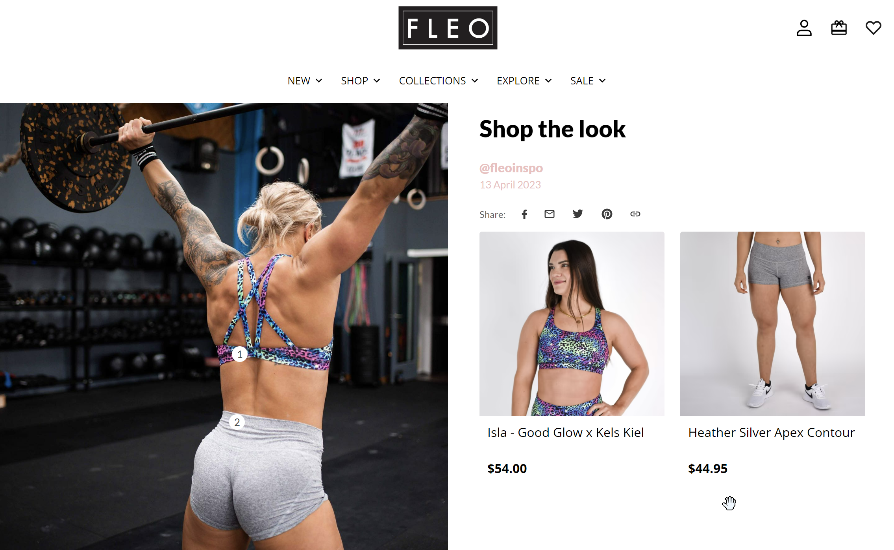
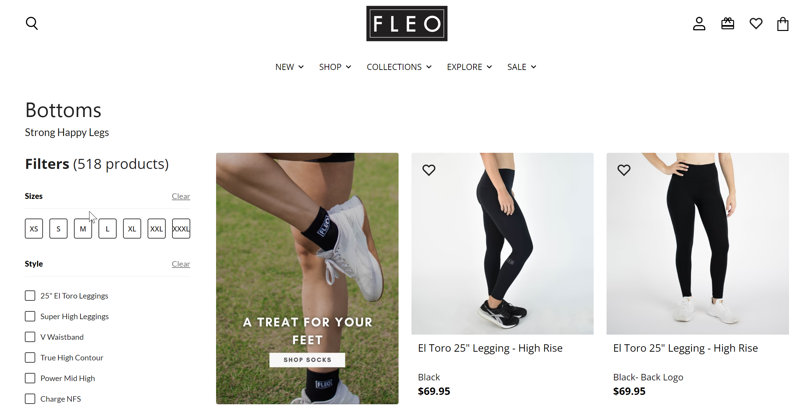
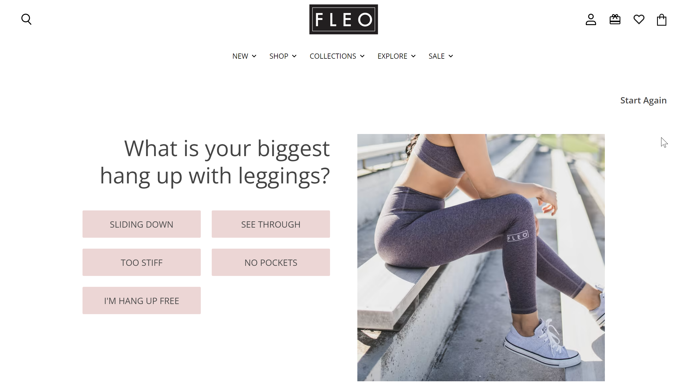

Fleo Activewear needed to move from their legacy Shopify setup to a fully headless storefront powered by Shogun Frontend. This was a technically complex, multi-team migration requiring close coordination between client stakeholders, a designer, and five developers — all while keeping the business running smoothly.
I was brought in by The Form Factory as Project Manager to own delivery end-to-end: planning, resourcing, client communication, and cross-functional execution across the full 5-month project lifecycle.
When I joined, the team was using GitHub issues as the sole project tracking tool — adequate for dev but not for cross-functional visibility or client reporting. I migrated the entire workflow to Jira and implemented SCRUM: two-week sprints, daily standups, sprint reviews, and retrospectives.
This gave the team a shared source of truth, made blockers visible early, and created a rhythm the client could follow. The result: a project that stayed on schedule across a 5-month engagement with a six-person cross-functional team.
Fleo's stakeholders were non-technical, but they needed confidence in a technically complex migration. I owned the client relationship throughout: weekly status calls, structured progress reports, and clear escalation paths when decisions were needed.
Rather than shielding the client from complexity, I translated it — turning sprint updates into business-relevant milestones they could track and approve. This built trust and reduced scope creep caused by last-minute surprises.


A headless migration involves architectural decisions that ripple across the entire storefront — routing, content modeling, API integrations, and performance. I served as the bridge between Fleo's product requirements and the technical team's execution, ensuring nothing got lost in translation.
I owned backlog grooming, acceptance criteria, and QA sign-off — making sure every delivered feature matched both the design specifications and the client's business intent before it went live.

Whether you need an ops leader, a project partner, or someone to run the machine — I'm available for the right opportunity.
Schedule a Call